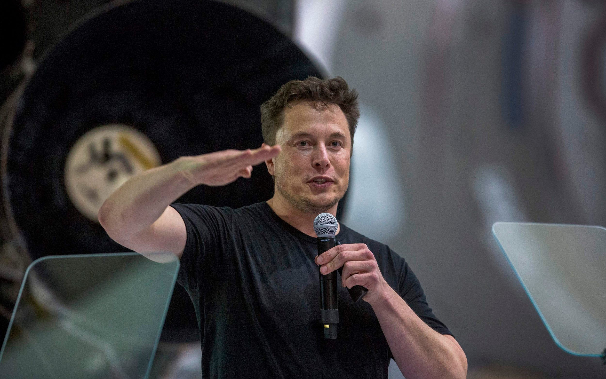

Elon Musk has a net worth of $254 billion
Here is a time line of Elon Musk's Life:
-
1971
Born on January 28th in Pretoria, South Africa
-
1981
At age 10, he developed an interest in computing while using the Commodore VIC-20.
-
1983
At age 12, he learned computer programming using a manual and developed a video game called Blastar
-
1989
Using a canadian passport, Elon moved to Canada and studied at Queen's Univeristy.
-
1992
He later moved to the US because he believed that "America is where great things are possible."
-
1994
Elon took on two internships in sillicon-valley at an energy-storage startup called Pinnacle Research Institute and at Rocket Science Games
-
1994
Elon took on two internships in sillicon-valley at an energy-storage startup called Pinnacle Research Institute and at Rocket Science Games
-
1995
Musk and his brother Kimbal created a web software company which developed an interacitve city guide, which was later sold to Compaq for $307 million.
-
1997
He graduated the University of Pennysylvania in 1997 with a BA degree in economics and a BS degree in physics.
-
1999
Musk cofounded X.com, an online financial serivices company which was sold to eBay later on and he received $165 million from the sale.
-
2005
Tesla Motors, an electric vehicle manafacturer was developed.
-
2005
Elon Musk founded SpaceX.
-
2013
SolarCity, a provider of solar systems was founded.
-
2013
Musk started Hyperloop, a new transportation startup which focused on fast underground travel.
-
2015
After raising awarness about the danger of AI, he started OpenAI,a non-profit which aims to help develop AI in a way that is safe and beneficial.
-
2016
Musk co-founded Neuralink, a startup to integrate the human brain with artificial intelligence.
-
2018
He started a alcohol brand called tesla-quilla as an April Fools joke on instagram.
-
2019
In 2019, Musk announced work on a device akin to a sewing machine that could embed threads into a human brain.
-
2021
In January 2021, Musk, with a net worth of $185 billion, surpassed Amazon founder Jeff Bezos to become the richest person in the world.
if you have time, see more about
Elon Mask